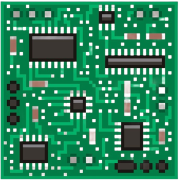
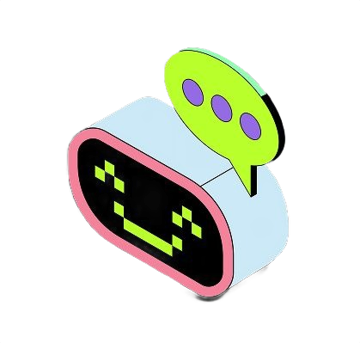

Without
Guesswork
Your IT help desk, on demand. Ask about VPN, passwords, MFA, Wi-Fi or tickets. Answers come from your company's own documents, with the source shown.


- Company documents firstAnswers start from your own IT guides.
- Sources on every answerSee exactly which document it came from.
- Says so when unsureNo evidence, no guess. It tells you what it could not confirm.
A Step-by-Step Agent
Route, search, grade, retry. Then answer.

The Company Knowledge Base
Documents in, cited answers out
[ INDEXED_DOCUMENTS ]
█ vpn-remote-access-guide.md
█ password-policy-and-reset.md
█ mfa-policy-and-setup.md
█ ticket-priorities-slas-and-escalation.md
> Embedding model: bge-small-en-v1.5
> Best 4 sections returned per search
How Evidence Is Checked
Every question is searched in the company knowledge base first. A grader then decides whether that evidence is good enough. If it is weak and the topic is public, the agent searches the web and says so. If it is still weak, it rewrites the question once and tries again, instead of guessing.
Answers come from your own IT documents before anything else is consulted.
Weak evidence triggers one query rewrite. If it is still weak, the reply says what could not be confirmed.
PRIVATE Q TO WEB: NO
PASSWORDS SHOWN: NO
WEB NOTICE: ALWAYS
RULES ENFORCED IN CODE
How a question travels
Every message takes one of four routes. Pick one and watch the agent decide, step by step.
$ question:

Ask Your First Question
Ask about VPN access, passwords, MFA, tickets and more. Every answer shows where it came from.
